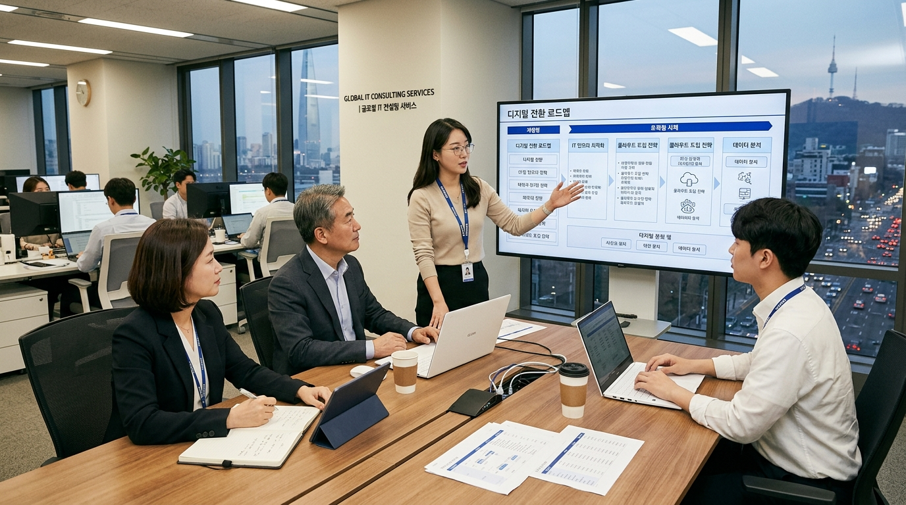

IT에 돈은 계속 쓰는데,
왜 회사는 더 느려지고 있을까요?
투자 대비 성과가 보이지 않는 불투명한 IT 의사결정. 27년 경력의 외부 CIO가 비즈니스 관점에서 명쾌한 해답을 제시합니다.
이미 문제는 알고 계실 겁니다.
●
도입 효과 없는 ERP: 수억을 들였지만 업무는 여전히 수작업이고 데이터는 파편화되어 있습니다.
●
특정 인력/업체 의존성: 담당자가 퇴사하면 블랙박스가 되는 시스템, 벤더사에 휘둘리는 유지보수 비용.
●
기술 판단 기준의 부재: 클라우드, AI... 어떤 것이 우리 비즈니스에 진짜 이득이 되는지 판단할 전문가가 없습니다.
●
성과 관리의 불가능: IT 비용은 매년 늘어나는데, 이것이 영업이익에 어떻게 기여하는지 증명되지 않습니다.
어디서부터 풀어야 할지
막막한 상태입니까?
External CIO는 단순 개발자가 아닌, '전략적 리더십'을 제공합니다.
📋
Technical Translator
현장의 파편화된 요구사항을 비즈니스 언어로 번역하여 명확한 전략적 로드맵을 수립합니다.
⚖️
ROI-Focused Judgment
트렌드에 휘둘리지 않고, 실제 기업의 수익성과 효율성을 기준으로 IT 투자를 검증합니다.
🏗️
Architecture Governance
누더기가 된 시스템 구조를 재설계하고, 지속 가능한 데이터 거버넌스 체계를 확립합니다.
27년, IT 의사결정 현장에서 검증된 경험
상세 프로젝트 리스트 보기 →🏢
대규모 프로젝트 경험
대규모 엔터프라이즈 ERP/MES/SCM 시스템 구축 및 그룹사 통합 프로젝트 PM 수행.
🛡️
IT 거버넌스 체계화
중견/대기업 맞춤형 IT 전략 수립, 인프라 보안 규정 및 데이터 관리 체계 확립.
⚙️
디지털 트랜스포메이션 리더십
제조 현장의 지능화 및 물류 혁신을 위한 차세대 시스템 고도화 및 조직 관리.

가볍게 시작하지만,
결과는 명확합니다
Most Selected
Deep Dive
구조 진단 리포트
데이터, 인프라, 비용 구조를 심층 분석하여 정교한 기술 문서를 제공합니다.
- ✓ 데이터 거버넌스 정밀 진단
- ✓ TCO 최적화 방안
상담 신청
전문가의 30분 상담이 수억 원의 비용 낭비를 막을 수 있습니다.